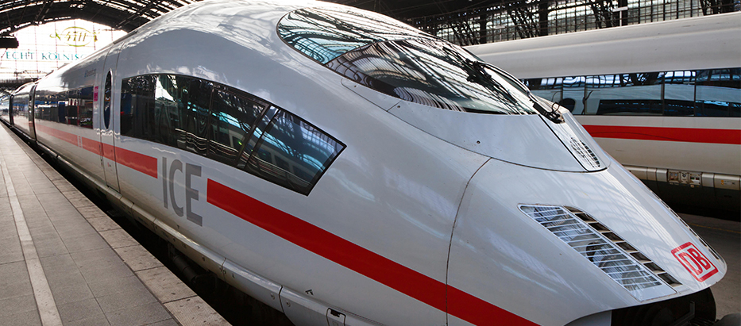
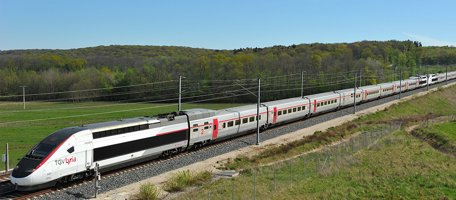
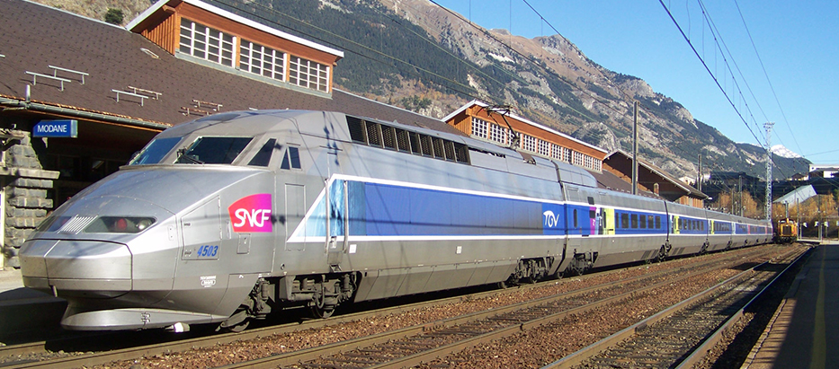
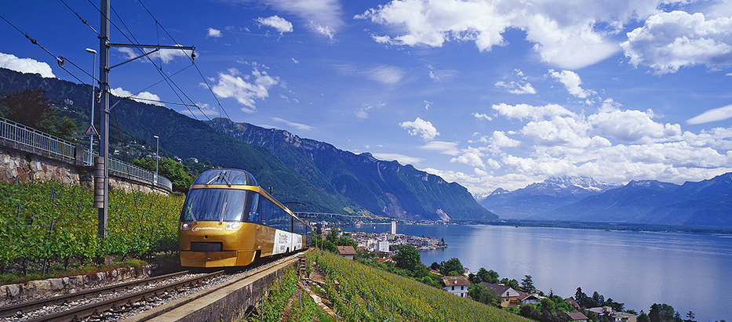
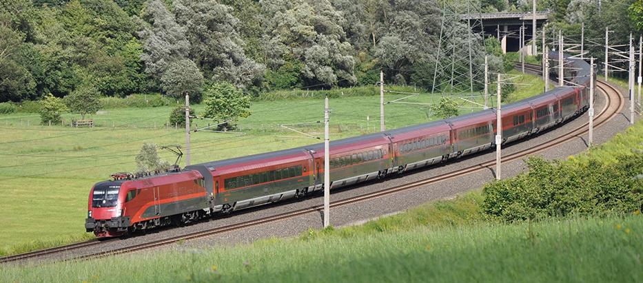

border-box
Eurail Pass
유레일 패스 한 장이면 방대한 철도 네트워크를 이용하여 프랑스, 이탈리아, 스페인을 포함한 유럽 28개국을 자유롭게 여행하실 수 있습니다. 첫 해외 여행, 여행 매니아를 위한 여행, 아이들과 함께하는 여행, 이 모든 여행에 적합한 패스가 준비되어 있습니다.

ICE 이체에
독일 내 주요 도시에서 부터 덴마크, 네덜란드, 프랑스, 스위스, 오스트리아 등을 연결하는 독일의 고속열차입니다.

TGV Lyria
프랑스와 스위스를 연결하는 국제 고속열차로 프랑스의 주요구간과 스위스의 주요구간을 연결해 줍니다.

TGV 떼제베
프랑스 전역과 벨기에, 독일, 이탈리아 등을 연결하는 고속열차 입니다. 프랑스 국철(SNCF)에서 예약이 가능합니다.

Golden Pass
몽트뢰에서 츠바이징멘까지 스위스의 멋진 풍경을 볼 수 있는 관광열차입니다.

Railjet
오스트리아와 헝가리, 독일과 스위스를 연결하는 초고속 열차입니다.